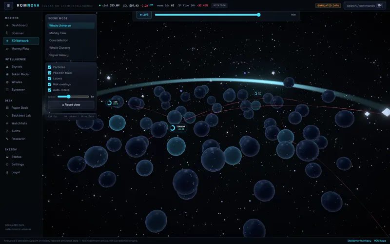
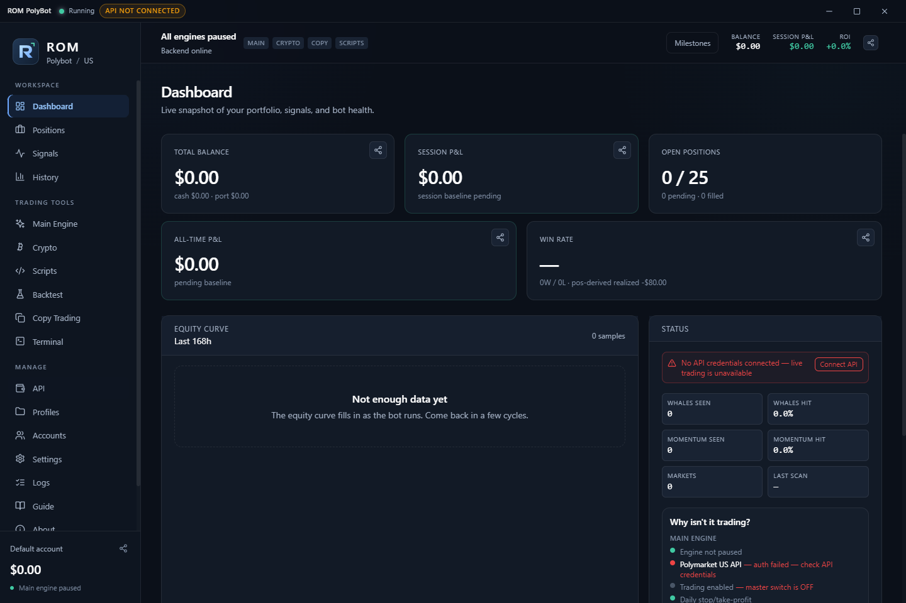
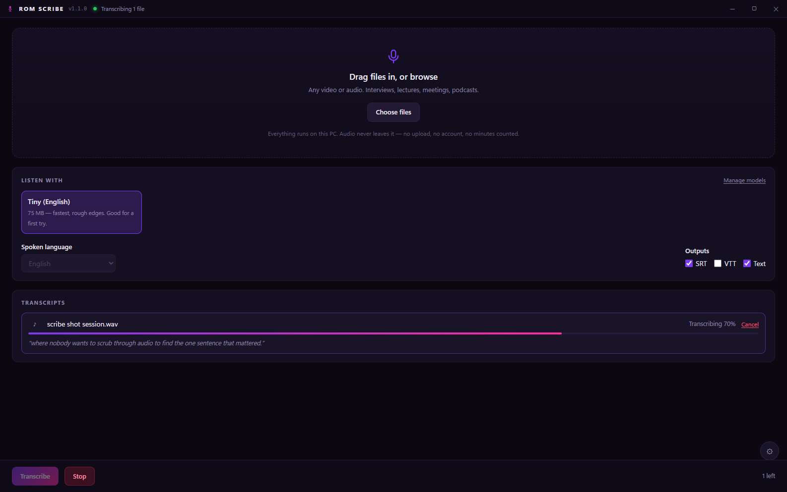
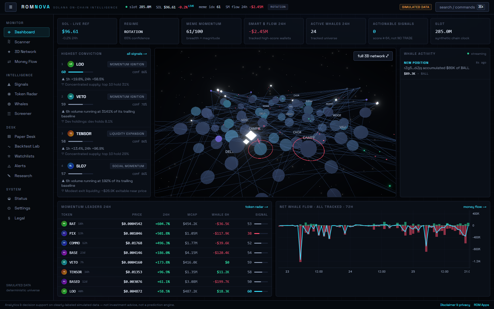
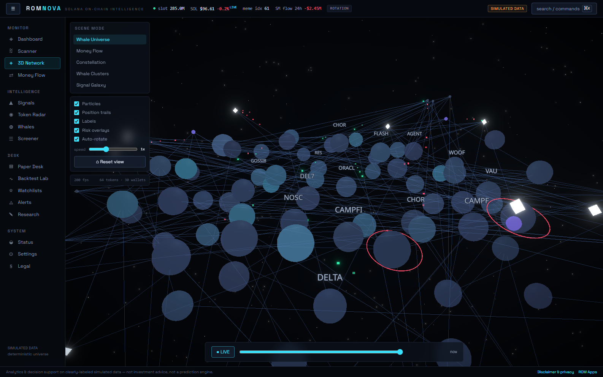

Apps. No strings.
Five free Windows apps, built by one person. Two of them trade real markets — with no proven edge, and this site shows you the losing numbers. One runs right here, in this tab.

Launch it live runs in this tab · no install, no accountDOWNLOADS
THE REAL THING
No mockups. All five, running.






 ROM CONVERT
ROM CONVERT
Converting a file shouldn’t mean uploading it. Drag it in and it never leaves the machine.
Nothing is uploaded
ffmpeg ships inside the app and does the work on your own machine. No server sees your files, no size cap, no watermark — and it keeps working with the network switched off.
Formats, not codecs
Pick what you actually want — plays on everything, about half the size, ideal for the web — and it chooses the encoder and settings. Eleven outputs across video, audio and images.
It never overwrites
Convert the same file twice and you get the first result and a second one beside it. Writing over your original is refused outright, and scaling only ever shrinks — a 720p cap leaves a 480p clip alone.
Cancel without the mess
Stop a conversion and the half-written file is deleted, because a truncated video that looks finished is worse than none. Failures explain themselves in plain words.
A whole folder at a time
Drag in as many files as you like and watch the queue work through them, with real progress and the speed it’s running at. Each one reports what it saved when it lands.
Trim and shrink
Cut to a section, cap the resolution, or pick a smaller quality preset when the file needs to fit somewhere. Audio can be pulled straight out of a video in one step.
 ROM TRADER
ROM TRADER
A bot that shows its work, and stops itself. Paper-trades until you say otherwise.
Momentum engine
Scans the most liquid Kalshi markets closing within two hours and rides short-term price moves — take-profit, stop-loss and reversal exits built in.
It shows its work
A live signals feed lists every market the last sweep looked at, with the reason it did or didn’t qualify — spread too wide, price out of range, momentum under the trigger.
Test it before you trust it
Every market sweep is recorded while it runs. Replay that data through your settings and all three presets at once — the same code that trades live, the same hours of market, four sets of results side by side. It won’t tell you what happens next, but it will tell you which settings were obviously worse.
Brakes that work
Paper-trades by default — real orders need your own API keys and an explicit switch. Then it stops itself: on a daily loss limit, on a run of losses in a row, and outside the hours you allow. It also refuses any trade whose target can’t clear Kalshi’s round-trip fee, because those lose money however often they win. Plus one-click flatten and a cooldown so it can’t sell and instantly re-buy the same market.
Runs in the background
Close the window and it keeps trading from the tray, where stop and close-all also live. Toasts report each open and close, and make a sound only when the engine has stopped itself — the one you actually need to hear. Updates download quietly but never install mid-session, because restarting would abandon open positions.
Open source
On GitHub under MIT, with 197 assertions — including suites that run against real Windows credential encryption and drive the running app itself. Per-user installer, uninstalls clean: no account, no background services.
ROM POLYBOT
ROM Trader's Polymarket sibling, in plain Python. No black box — every rule is a file you can read.
Eight strategies, all legible
Momentum, mean reversion, volume spikes, trend continuation, whale following, order-book sentiment and more — each one a short Python file, each one tunable per category (politics, crypto, sports…) from one YAML config. Or run manual mode, where the engine only manages your exits.
A risk manager that knows the market
Position and category caps, a daily loss stop, spread and price-band filters — plus rules learned the hard way: sibling markets of one event count as a single bet, exits are refused when the stop would sit inside tick noise or the target above $1, and a market that resolves out from under a position gets settled at its real outcome instead of carried forever.
Paper first, honestly
The default mode simulates against live order books with a local ledger — fills at the touch, never at a fantasy mid. Live trading exists, but it needs your own wallet key from an environment variable and an explicit config change. The dashboard shows red numbers in red.
Runs anywhere Python runs
No installer and no build step: clone, pip install, go. A local web dashboard shows positions, watched markets and activity; the same engine runs headless from the terminal. Public Polymarket APIs only — observing needs no account at all.
ROM SCRIBE
Subtitles and transcripts, made on your PC. No upload, no account, no minutes counted.
Any video or audio in
Drop an interview, a lecture, a meeting recording, a whole folder of podcasts — get back SRT and VTT subtitles and a plain transcript, saved beside the original. The transcript streams onto the screen as it's heard, so you can watch the words arrive.
Offline AI, verified
Speech recognition is OpenAI's Whisper running locally through whisper.cpp — once a model is downloaded, the network cable can come out. Every model is checked against a known SHA-256 fingerprint before it's ever used, and interrupted downloads resume where they stopped instead of starting a gigabyte over.
Models to taste
A 75 MB model that drafts fast, up to Large v3 Turbo — near the best speech recognition publicly available, free on your own hardware. About 100 languages, auto-detected, with optional translation to English. The picker is honest about which models mishear.
Burn captions in
One click renders the subtitles onto the video itself — a share-ready captioned MP4 beside the original, original untouched. Per-minute transcription services charge real money for what your CPU does free while you make coffee.
ROM NOVA
A Solana intelligence terminal. Launch it in your browser — or install the Windows app.
Signals that argue their case
Every setup gets a 0–100 score built from named evidence — whale flow, holder growth, liquidity, volume — with the weights visible, a stated confidence, a bear case, and the conditions that would invalidate it. When the evidence is thin, the engine says NO TRADE instead of inventing conviction.
A market you can fly through
Tokens hang as planets that brighten with signal strength; wallets orbit them, trades cross the dark as particles, and risky tokens wear a red halo. Five scene modes and a time machine that reconstructs any moment from the past week — showing only what was knowable then.
Learn without losing
A paper trading desk with honest fills — slippage, fees, and orders rejected when they'd eat the pool — plus a backtesting lab whose anti-lookahead check fails the run loudly if any entry ever saw the future. Your workspace stays in your browser; nothing is uploaded.
IS THIS SAFE?
A fair question to ask of a free download from someone you’ve never heard of.
So verify it yourself instead. Every release publishes the SHA-256 of its installer. Paste this into PowerShell after downloading and it will tell you outright whether the file you have is byte-for-byte the one that was published.
$f = "$HOME\Downloads\ROM-Trader-Setup.exe"
$want = (irm https://github.com/romanstma-cpu/rom-apps/releases/latest/download/SHA256SUMS.txt).Split(' ')[0]
if ((Get-FileHash $f -Algorithm SHA256).Hash -eq $want) { "MATCH" } else { "DOES NOT MATCH - do not run it" }For the other apps, swap both names — ROM-Convert-Setup.exe with
rom-convert, ROM-Scribe-Setup.exe with rom-scribe,
ROM-Nova-Setup.exe with rom-nova.
Beyond that: every download comes from a GitHub release, and the full source for Trader, Convert, Scribe, Nova and Polybot is public under MIT. Every installer is per-user — none of them ask for administrator rights, and they uninstall cleanly. You can also read the code signing policy.